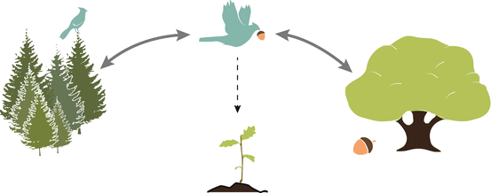

Key Findings
- Despite the political ambition to preserve the green structure in the Stockholm region, it is increasingly becoming fragmented by urban expansion; with some 50 % having disappeared from the most centrally located green areas since the mid 1970s.
- Wetland habitats have greatly declined in the area due to habitat loss and land-use change with loss of biotopes for amphibians, wetland birds, and insects.
- Hardwood deciduous forest, especially old oak forests (Quercus robur and Quercus petrea) has played a central role in the historical development of the cultural landscapes of the region for considerable time, representing important keystones for maintaining biodiversity.
- Local management practices, informal institutions and local ecological knowledge play a key role for sustaining habitats for wetland dependent organism groups, declining pollinator populations and insect-controlling birds. Informally managed land makes up a considerable part of the green structure in the Stockholm region.
- It is predicted that the average increase in temperature for Stockholm will be 4–6 °C by the year 2100. This will result in a longer plant season, with an increase of biomass. While oak woodlands and their associated flora and fauna is predicted to be promoted by temperature increase, research in the MA Stockholm Urban Assessment suggests that such prediction is highly uncertain.
17.1 Introduction
In the year 2003, Stockholm was selected as one of the sub-global urban assessments within the Millennium Ecosystem Assessment (MA 2005). This assessment was the Stockholm Urban Assessment (SUA) (Colding et al. 2003). When it ended in 2005, the research merely had begun and with results and insights being far from synthesized. Hence, this chapter revisits SUA and fills in important knowledge gaps in the assessment.
The SUA analytic framework has shaped the research in what has been referred to as the Stockholm school of urban ecological research in which knowledge generation of informally managed urban ecosystems is a key characteristic (Fig. 17.1). Informal management draws on local institutions (i.e., rules and norms) that tend to be created, communicated, and enforced outside of official government sanctioned channels (North 1990; Colding and Folke 2001).
Fig. 17.1
The SUA analytical framework. The left-hand side depicts the ecological inventories made in SUA, involving studies of the ecological linkages of local green area patches. The right-hand side depicts relationships studied in the social-ecological inventories, including studies of informal and formal institutions (Modified from Colding et al. 2003, p. 8 and published with kind permission of ©Johan Colding 2003. All Rights Reserved)
The overall objectives of SUA in 2003 were to: (1) expand knowledge from the structure to the function of natural systems in greater metropolitan Stockholm; (2) to understand how knowledge of ecological processes and dynamics are incorporated into institutions; and (3) to assess the potential for learning and combining and making use of different types of knowledge systems.
To understand the ecological dynamics of different types of land use and what role informal institutions, local ecological knowledge, management practices and social networks play in the resilience building in Stockholm, the SUA-researchers initiated social-ecological inventories of a selective set of urban land use, including allotment gardens, residential gardens and cemeteries, golf courses, the social-ecological history of the National Urban Park as well as knowledge on protected areas (Fig. 17.2).
Fig. 17.2
The SUA study area and the spatial distribution of assessed land uses. The area has a radius of 20 km, representing 15 % of the total land area of Stockholm County (Modified from Colding et al. 2006, p. 239 and published with kind permission of ©The Royal Swedish Academy of Sciences/Elsevier 2006. All Rights Reserved)
The origins of the analytical approach used in SUA derive from institutional analyses of long-term resource management in small-scale, local communities (Berkes and Folke 1998; Berkes et al. 2003; Colding and Folke 2001). A similar analytic framework as used in SUA (Fig. 17.1) was developed in a project, entitled Linking Social and Ecological Systems for Resilience and Sustainability, where knowledge was developed from local cases that showed historic and successful adaptation to ecosystem resilience and which also unraveled management practices and social mechanisms with a capacity to cope with resource and ecosystem change (i.e., Berkes and Folke 1998; Berkes et al. 2003). To transfer the analytic framework to urban systems has been the most distinct trademark of SUA, with new insights generated on urban social-ecological systems and their dynamics. This chapter summarizes the key insights of SUA on informal urban ecosystem management.
17.2 The Stockholm Metropolitan Area
The Stockholm County represents 1.5 % of Sweden’s land surface, constituting the most populated region with some 2,050,000 inhabitants or 21.5 % of the total population of Sweden (Statistics Sweden 2010). The area is the most rapidly growing in Sweden with urban densification (compaction) being identified as the most desirable urban development trajectory (RUFS 2010; Stadsbyggnadskontoret 2010). The area consists of a total land and water area of 6,785 km2, extending some 180 km from north to south. Forty-six percent of the land area constitutes forests, 18 % agricultural lands, 14 % settled areas, and 22 % other land uses (Statistics Sweden 1998). Out of the 2,920 km2 of forests, some 4,5 % is formally protected (Östlund and Lagerblad 2011).
The SUA study area makes up about 1,010 km2 of the central parts of Stockholm County, referred to as the Stockholm metropolitan area (Fig. 17.2). The outer fringe area consists of a suburban-rural landscape that includes edge cities interspersed among agricultural lands and managed forests. The central part includes, among others, the National Urban Park, a 27 km2 area, protected as a natural interest in law and representing a key study site in SUA in which several historical and social-ecological research assessments were conducted.
17.3 Key Characteristics and Challenges in Stockholm
17.3.1 Ecological Determinants and Their Changes
In a European perspective, the Stockholm region holds a considerable area with green structure. The Stockholm metropolitan area is situated in a fissured-valley landscape, with sediment-filled valleys, formerly agricultural fields and some wetlands, now harboring most of the routes for transportation and settlement. Between the valleys rises morain or bedrock heights, with the main of the green structure being mostly forests, but also former pastures. The green wedges constitute the nucleus of the green structure and together with large areas for recreation in the region’s outskirts play an important role in the generation of ecosystem services. For example, about 40 % of the CO2 generated by traffic and about 17 % of total anthropogenic CO2 can potentially be accumulated by the green structure of Stockholm County (Jansson and Nohrstedt 2001). Despite the political ambition to preserve green wedges in regional planning, the wedges are becoming more and more fragmented by urban expansion (Fig. 17.3).
Fig. 17.3
Urban development pattern in Stockholm County. The figure displays (from left to right) urban growth in the Stockholm County from the years 1910, 1944, and 1999 respectively (Prepared by and published with kind permission of ©Jerker Lokrantz/Azote 2013. All Rights Reserved)
While it has not been possible to acquire figures regarding the loss of green structure in the most recent decades, urban growth resulted in 8 and 7 % of green structure loss in the 1970s and 1980s respectively. Red-listed species have declined since the mid 1970s with some 50 % (i.e., 223 red-listed species) having disappeared from the most centrally located green areas (Gothnier et al. 1999). Some red-listed species in this area constitute relic populations of the warmer Bronze Age period (Ekelund 2007). Today, some 1,080 species are classified as red-listed (Artdatabanken 2010), but also common species groups show a sharp drop in abundance, e.g., amphibians, reptiles and some bird species.
Wetlands, especially open fens and wet alder forests, have greatly declined in the area due to habitat loss and land-use change with loss of biotopes for amphibians, wetland birds, and insects.
Hardwood deciduous forest and trees, especially old oak forests (Quercus robur and Quercus petrea) are considered to be a most valuable biotope for biodiversity. Oaks played a central role in the historical development of the cultural landscapes for a considerable time, especially in wooded pastures. This has resulted in one of the largest oak woodland areas around Lake Mälaren. Oaks constitute 18 % of all trees found in the National Urban Park, some of which are at least 500 years old (Hougner et al. 2006). Because the National Urban Park holds one of Europe’s largest populations of giant oaks the park plays a critical role in the resilience building of oak forests from an international perspective, considering that the epidemic oak disease has led to a decline of oak forests over wide ranges in Europe (Führer 1998; Barklund 2002).
As a keystone species, oaks produce a unique set of niches for flora and fauna that depend on old hollow trees, hosting up to 1,500 species of insects, mosses, fungi and lichens and providing nesting and feeding sites for many birds and bats (Hougner et al. 2006). Of all red-listed insects in NUP, 80 % are linked to old growth oak trees and lime trees (Gothnier et al. 1999). Studies in SUA (Lundberg et al. 2008) revealed that natural regeneration of oaks depends on an intimate chain of ecological relationships with the Eurasian jay (G. glandarius) representing the key link in this chain (Fig. 17.4).

Fig. 17.4
The natural oak forest regeneration complex. This complex is necessary to consider in natural regeneration of the oak- dominated landscape in the National Urban Park. Oak forest regeneration depends on Siberian jays for dispersal and planting of acorns. In turn jays depend on the presence of dense coniferous forests for egg laying and for hiding offspring from predators. Hence, in order for successful natural oak forest regeneration in NUP, it is not only critical to preserve jay populations but also coniferous forest stands within or in close proximity to NUP (Modified from Hougner et al. 2006, p. 368 and published with kind permission of ©Ecological Economics 2006. All Rights Reserved)
17.3.2 Effects from Climate Change on Biodiversity, Ecosystem Services, and Resilience
As the global average temperature rises due to climate change, it is likely that the climate zones will be relocated northwards, meaning that Stockholm could end up in a climate zone similar to the one of Berlin at an increase by 5 °C (Ekelund 2007). It is predicted that the average increase in temperature for Stockholm County will be 4–6 °C by the year 2100 (Länsstyrelsen i Stockholms län 2011). This will result in a longer plant season, with an increase of biomass.
It is estimated that a longer plant season could have positive implications for agriculture and forestry since larger profits of the harvests are to be expected, unless plants and trees are stressed by an increased amount of diseases due to increased humidity and heat or drought during hotter summers (Ekelund 2007). Table 17.1 summarizes potential effects due to climate change until year 2100 as estimated in a recent survey by the Stockholm County Administrative Board (Östlund and Lagerblad 2011). While it is highly uncertain what the effects would be, certain species are likely to be favored with a change of climate while others will be disadvantaged. For example, fish species that depend on cold water in lakes and in the Baltic Sea will be disadvantaged (Ekelund 2007). Warmer summers also favor algae blooms in the Baltic Sea, Lake Mälaren and other lakes, with higher water temperature increasing the risk of growth of poisonous algae that could have a damaging influence on marine animals and plants.
Table 17.1
Analysis of predicted climate change in Stockholm County by year 2100 (based on Östlund och Lagerblad, 2011).
• Average temperature increase of 4–6 °C • Average precipitation will increase by 10–30 % (more during winter) • Prolonged plant–growing season of 100–140 days • Extreme precipitations more common • Number of snow days is reduced by 65–100 days • Flows in water bodies will increase greatly during winter, but be reduced during summer • An increase of up to 1 meter of the Ocean surface until year 2100 |
Resulting consequences:
|
• Increased heat waves • More favorable climatic conditions for mosquitos, tics, bacteria and mold • Increased local problems of flooding related to precipitation and extreme rainfall • Flooding from increased ocean surface level • Increased risk for land slides and erosion, affecting built–up areas and infrastructure • Increased risk for a decline of water quality • Prolonged pollen season |
A temperature increase is already taking place in the region with some species having changed their behavior. Warmer and earlier spring means that some migratory birds arrive earlier to the area than previously (Ekelund 2007). If the tree line is offset northwards the beech can grow in this area on a more permanent basis while spruce trees will be disadvantaged. The spruce will be exposed to much greater competition from deciduous trees than is the case today due to deciduous trees being favored by heat and that they can handle winter storms better. Looking ahead, there is a risk that the entire spruce ecosystem may disappear from Stockholm (Ekelund 2007).
Oak woodlands and their associated flora and fauna are, on the other hand, predicted to be promoted in a warmer climate, encouraging both growth rates and the dispersal of oaks (Ekelund 2007). Several of the red-listed insects and other invertebrates that depend on oak currently live at the edge of their northward climate zone. In recent assessments there is a clear increase of several threatened species due to a hotter summer climate (ibid). Hence, current populations of red-listed species associated with oaks are considered to function as source populations and could plausibly contribute to an increase of biodiversity in this area with warmer climate. However, the situation of potential species increase may in fact only be temporary, suggesting that a critical threshold for ecosystem compositional change has not yet been reached in the Stockholm area. As studies within SUA indicate, natural regeneration of oaks is carried out by the seed dispersal service performed by the Eurasian jay (Hougner et al. 2006; Lundberg et al. 2008). The jay depends on dense spruce tree stands to build its well-hidden nest in order to avoid predators (Fig. 17.4). In a future of a warmer climate, which could eventually cause the entire spruce ecosystem to disappear from the Stockholm region, the jay will likely be disadvantaged. Thus, the red-listed species that today are associated with oak woodland may indeed be under threat in the future because conditions for jays and the associated natural regeneration of oaks deteriorate with a rise in average temperature (Colding et al. 2013a).
The example of the Eurasian jay highlights the importance of taking ecosystem services into account in assessments of future climate impacts on biodiversity, to view ecosystems as moving targets that change over time (Holling and Sanderson 1996), and to realize that resilience building is very much about disclosing the relationships that determine critical thresholds in ecosystems.1
17.3.3 Population Increase
During the 1990s, there was an annual population increase of about 18,000 persons in Stockholm County. When SUA started in 2003 it was estimated that about two million inhabitants would live in the county by the year 2010 (Colding et al. 2003).2 This prediction turned out to be very accurate; as of year 2010 the total population had increased to 2,054,343 (Statistics Sweden 2010); i.e., 11 % population increase. According to recent statistics, it is estimated that this trend will continue, meaning that the county likely will hold some 2,400,000 people in year 2030.
Besides the loss of ecosystems mainly due to a decrease in the area of cultivated lands for building and infrastructure development, several environmental effects are associated with population growth in the region. These include acidification due to airborne pollution; increased nitrogen eutrophication in forest, lakes and watercourses; eutrophication from phosphorus and nitrogen in the Stockholm archipelago; the drainage of open cultivated lands dominated by covered arable lands; and a decrease of wetland areas due to cultivation and settlements (Colding et al. 2003).
17.3.4 The Lack of Regional Planning of the Green Structure
A main goal of decision makers in the Stockholm region has been to make the region one of the world’s leading development areas, and to promote international competitiveness, high and equal living conditions, and a long-term sustainable environment (RUFS 2010). This should be reached based on the regional strategies adopted by local and regional policy makers and planning authorities. These strategies include business development, education and research, housing and infrastructure development, and climate and energy adaptation (Kämpe 2011).
Physical regional planning was in the later part of the 1990s mainly geared at maintaining the capacity for economic growth in the region (Colding et al. 2003). While policy makers nowadays recognize the importance of addressing climate change, strategies to address this issue draw primarily from more advanced technological solutions, such as more efficient energy systems to reduce CO2 emissions (Colding et al. 2013a). It is, however, increasingly clear that social and ecological systems truly are interconnected across spatial and temporal scales and therefore the physical urban environment needs to capture such integration in considerably new ways at the local levels of urban design and form (Barthel et al. 2010a).
Currently, it is extremely difficult to reach certain regional planning goals, such as to protect the green wedge system and to integrate environmental issues in the physical planning. One main reason is the system of self-governing local municipalities (RUFS 2010). Actions taken by one municipality affect adjacent municipalities’ use of the green structure. Exploitation pressure of one municipality may sometimes be so high that well-considered decisions of planning cannot be taken by one municipality alone (Colding et al. 2003). Thus, there is an expressed need for inter-municipal coordination to reach the goals of sustainable development for the region.
17.3.5 Formal Institutions and Biodiversity Management in Stockholm
Biodiversity management in Stockholm County holds a long tradition of being formal in character, setting aside valuable areas for nature conservation by the state and local municipalities. The proclamation of nature reserves and other protected areas has been the cornerstone in the preservation of species and ecosystems in Sweden. A number of formal institutions determine how green areas are used, managed and maintained that influence biodiversity. The Environmental Code and the Planning and Building Act – represent the two most important legal measures regulating biodiversity governance. The Environmental Code contains overall regulations with regard to how public interests are taken into account when government authorities and municipalities deal with cases of conflicting interests concerning the use of natural resources (Svensk Författningssamling 1998). The Planning and Building Act governs spatial planning and states that each municipality shall draw up an up-to-date Municipal Comprehensive Plan. The plan indicates where urban development is suitable. Such plans reflect future trends of land use in the study area and constitute an important tool in the analysis of trends and conditions. Furthermore, several international conventions influence biodiversity management, such as the Convention on Biological Diversity (CBD) and the European Union network, Natura 2000.
17.4 The Stockholm School Approach
17.4.1 Reconsideration of Formal Management
The SUA research highlighted that the present, formal governance system of biodiversity is fraught with several shortcomings. For one, formal measures, such as setting aside legally protected areas and other legislative measures for biodiversity conservation do not automatically lead to effective conservation (Colding and Folke 2001; Colding et al. 2003). For example, the protected areas in Stockholm constitute a patchwork quilt of ecosystems that do not match critical ecosystem interactions and dynamics, missing the important aspects of landscape connectivity (Borgström 2003; Colding et al. 2006; Ernstson et al. 2010, Löfvenhaft et al. 2002). One clear example of this was found in a nature reserve in southern Stockholm where the terrestrial and freshwater environments were managed separately with very limited communication across the areas of jurisdiction (Borgström 2009). This division of management effectively cuts the watershed into pieces and the scales of the areas hydrology are disregarded. It was also found that many formal institutions lack the flexibility to adapt to an ecosystem approach. This is reflected in that management of green areas is rigid and that there were more contacts between managers handling the same kind of area (e.g., cemeteries) than between neighbouring green space managers, implying a neglect of plausible spatial ecological connections such as species migration routes (Borgström 2003).
One of the shortcomings of protected areas is that it is often financially costly to manage such areas (Berkes 1996; Horowitz 1998; Colding et al. 2006). For example, in the London region, parts of the protected green belt have become severely degraded due to lack of money partitioned for management (Greater London Authority 2001). A resulting consequence of lack in management funding is a ‘separation of attributes’ of green areas like public parks. This entails that the rights to green space habitats often become separated due to congestion and lack of management (Lee and Webster 2006). In Stockholm city, for example, there are several instances of public parks having become degraded due to underfunding. In conjunction with restoration of these parks, local government agencies often open up for several types of private establishments, such as cafés, amusement areas, etc.; hence, parts of these parks become privately enclosed, often resulting in green-area loss (Colding 2011).
17.4.2 Informally Managed Ecosystems in Stockholm
One important concluding insight of SUA is that the present formal biodiversity governance system in combination with high pressure for available urban land run the risk of overlooking the ecological functions and the social potential that local stewardship groups play in the management of urban green space. Lessons from the work of local communities show that local management practices, informal institutions and local ecological knowledge play an important role for sustaining local ecosystems and natural resources (Ostrom 1990; Berkes and Folke 1998; Berkes et al. 2003). Informal institutions involve rules and norms that tend to be created, communicated, and enforced outside of officially government sanctioned channels (North 1990). Such locally developed institutions represent an example of local self-organization around ecosystem management and have the potential to reduce transaction costs related to management of ecosystems since they draw on the commitment and self-interest of the local stakeholders involved in such management (Colding and Folke 2001).
By adopting informal institutions in ecosystem management, a greater number of people and/or organizations also become stewards of land. Colding et al. (2006) refer to such stewardship groups as green-area user groups, denoting users and landholders that manage land individually or in cooperative form, for example in associations, clubs or similar organizational units. Hence, informal institutions that work for conservation may potentially provide benefits that can be capitalized on in urban ecosystem management designs, especially in cases where financial constraints make biodiversity conservation ineffective. In contrast to formal governance, green-area user groups rely on a wide array of informal institutions and draw on local ecological knowledge in management activities. When land managed by such groups are taken into account in urban landscapes, the actual coverage of green space is often considerably greater than what is normally presented in official land estimates. Colding et al. (2006) found based on the calculation of garden area of two real-estate classes registered as ‘low-building’ and ‘part-time’ (summer houses), that they on average consisted of 83.6 % garden habitats (i.e. all natural areas minus buildings and impermeable surfaces of a real estate). Allotment gardens, residential gardens and golf courses represent informally managed land in the Stockholm metropolitan area. These lands were found to cover as much as 18 % of the total land area which represents well over twice the area covered by protected areas and over half of the urban land demarcated as green wedges (Colding et al. 2006). However, in Stockholm there has been a lack of official recognition of what value these land uses hold for the generation and maintenance of biodiversity and associated ecosystem services. In the following sections, these functions are more specifically elaborated upon.
17.4.3 Urban Garden Habitats and Ecosystem Services
As of year 2006, there were 128 allotment gardens in the Stockholm metropolitan area, covering 0.3 % of the total land area, and ranging in size between 3,450 and 70,000 m2 (Colding et al. 2006; Andersson et al. 2007). Assessments in SUA showed that such informally managed lands promote the generation of critical ecosystem services, hence, work in complementary ways with protected areas and other natural land to support biodiversity. For example, both allotment and domestic gardens were found to be valuable habitats for native pollinators, representing an important functional group for sustaining flora and food production in this area (Colding et al. 2006; Andersson et al. 2007). While allotment areas only covered a tiny portion of the land area, their role in providing high-quality habitat for the inner-city urban core was estimated to be significant due to their rich abundance of flowering plants and due to a prolonged season for nectar supply facilitated by active gardening. Investigated bumblebee diversity ranged from 5 to 11 species, with 8 species being the average number found in a typical allotment area in Stockholm (Colding et al. 2006; Ahrné et al. 2009). Moreover, physically isolated allotment areas in the highly developed urban matrix were found to be functionally connected by native bees (Fig. 17.5). Networks of small habitats have been found to sustain considerable pollinator diversity (Cane 2001).
Fig. 17.5
A network of allotment areas in Stockholm city. The allotments displayed in the figure can be considered functionally connected by invertebrate metapopulations. City parks, cemeteries, and other inner city green areas may benefit from pollination by the insects found in allotment areas, especially bees, since foraging distance between allotments and other areas is small. The circles around allotment areas have a 1.0-km radius, i.e. within the foraging range of most bumblebees (Modified from Colding et al. 2006, p. 241 and published with kind permission of ©The Royal Swedish Academy of Sciences 2006. All Rights Reserved)
Moreover, Andersson et al. (2007) found that allotment gardens had higher pollinator abundance than formally managed public parks and cemeteries, and held a different community structure of seed dispersing and insectivorous birds. Many gardeners cultivate some flowers with the only intention being to feed pollinators and many improve nesting opportunities for wild bees. These informal institutions support the abundance of wild bees and thus the ecosystem service of pollination (Andersson et al. 2007), not only within allotment gardens, but also over large areas of the urban landscape (Osborne et al. 1999; Greenleaf et al. 2007). The enhanced pollination service feeds back to the gardeners, since pollination underlies the generative capacity of flowers, fruits and many vegetables, which are the prime concern for gardeners.
Allotment gardeners were also found to hold considerably more knowledge about ecological dynamics than staff responsible for maintenance and management of public parks and cemeteries (Andersson et al. 2007). This includes knowledge about interactions between organisms, the interplay between organisms and site-specific abiotic conditions, as well as about ecological processes. Barthel et al. (2010b) refer to allotment gardens as communities-of-practice for environmental learning among participants that involve acquisition, transmission, and modification of ecological practices and local ecological knowledge (Wenger 1998). In the study by Barthel et al. (2010b), oral communication was found to be the most important means of transmission of local ecological knowledge and practices in allotment gardening with 57 % of the respondents reported to learn about garden management through daily talks with other gardeners. In comparison, 18 % learn about gardening by talking with external experts. Newcomers tap into the community-of-practice primarily through conversations with experienced neighbors, and through teaching by appointed mentors.
Domestic gardens often cover substantial tracts of land in city-regions (Jeffcote 1993; Gaston et al. 2005). In the Stockholm metropolitan area, domestic gardens are mainly found at some 5–7 km from the city center, and can be characterized as suburban green patches, covering quite extensive and cohesive chunks of green space, sometimes located in direct adjacency to nature reserves (Colding et al. 2006). In many parts of Stockholm, domestic garden habitats provide cohesive green belt structures, promoting the dispersal of organisms between ecosystems in the urban matrix. In the Stockholm metropolitan area, 16 % of the land area is managed as private, domestic gardens (Colding et al. 2006). In a recent study of breeding bird diversity in three types of residential housing developments in Stockholm, a total of 36 bird species, representing 14 families, were found. The bird communities were dominated by a number of species generally found in all housing types at relatively high abundances, and included both neo-tropical insectivores and an overall high diversity of insectivores (Andersson and Colding in review).
17.4.4 Golf Courses and Wetland Species
The Stockholm metropolitan area holds 24 golf courses, comprising 1.4 % of the total land area and 2.1 % of the green wedge structure. One fifth of these are located partially within or adjacent to nature reserves. These golf courses are constructed on former arable land and heavily regulated in environmental legislation regarding chemical inputs (Colding et al. 2009). In terms of area, a median-sized golf course of 57 ha is comprised of quite large natural areas, considering that roughly 70 % of a golf course represents non-playable areas with semi-natural vegetation of trees and grasslands. Hence, some 40 ha of a typical golf course in the Stockholm area consist of varying “natural” habitats. In comparison, a median-sized nature reserve in this area is 77 ha (Colding et al. 2006).
In an ecological inventory of the wetland fauna in ponds of golf courses, a total of 71 macroinvertebrate species were found (Colding et al. 2009). There were no significant difference between golf course ponds and off-course ponds (outside the golf course) either at the species, genus or family levels. Golf course ponds held a more homogenous species composition than ponds in nature-protected areas and ponds in residential parkland, according to a within-group similarities test. A total of 11 species of odonates (i.e., dragonflies and damselflies) were identified, including the red-listed large white-faced darter dragonfly (Leucorrhinia pectoralis). Although anuran occurrence did not differ between golf course ponds and off-course ponds, the great crested newt (Triturus cristatus) was significantly associated with golf course ponds. Among the taxa of conservation concern found on golf courses, the four amphibian species are nationally protected in Sweden. Golf courses provided over a quarter of all available permanent, freshwater ponds in the Stockholm metropolitan area, which the GIS results revealed (Colding et al. 2009).
17.4.5 The Role of Social Networks in Informal Urban Ecosystem Management
In a historical and social inventory of the National Urban Park a total of 69 interest groups were identified as being involved in the use of the park (Barthel et al. 2005). Of these, 25 represented green-area user groups that had a direct role in managing habitats within the park, contributing to sustaining ecosystem services such as seed dispersal and pollination. Results of this study suggest that incentives should be created to widen the current biodiversity management paradigm in the Stockholm metropolitan area, and actively engage local stewardship associations in adaptive co-management processes of the park and surrounding green spaces.
Ernstson et al. (2008) found that social networks also play a role in the protection of urban ecosystems by constructing “protective stories” that have political influence and facilitate collective action, as well as transfer and sustain knowledge related to the politics of space. A network among 62 civil society organizations created a core-periphery structure between conservation groups in the core, and user groups in the periphery to protect the National Urban Park. This made it possible to stop larger-scale exploitation plans in the park, and an almost day-to-day monitoring by user groups active in the park landscapes to hinder smaller-scale exploitations. Furthermore, through making use of scientific reports on habitats and dispersal patterns, and reports of cultural values, organizations could articulate in popular discourse how the park sustained holistic values, creating a “protective story” for the National Urban Park.
17.5 Lessons for Urban Resilience Building
17.5.1 Informal Institutions and Management
As shown by the studies in SUA, informal ecosystem management in Stockholm contributes to sustaining habitats for wetland dependent organism groups, declining pollinator populations, insect-controlling birds as well as making up a considerable part of the urban green structure in greater metropolitan Stockholm. International studies indicate that urban garden habitats hold a rich flora of plants, including rare and threatened species (Maurer et al. 2000), as well as high numbers of invertebrates regardless if garden plants are native or alien (Colding et al. 2006). Some birds constitute effective pest-regulators on agricultural cultivars (Colding 2007). Garden habitats that attract insect-controlling birds could contribute in the resilience building of cities by buffering undesirable effects from climate change as a rise in temperature is expected to provide a more favorable climate for mosquitoes, tics, and noxious insects.
Garden habitats should to a greater extent be considered in the resilience building of declining pollinator populations. For example, the designation of residential areas with gardens could ideally be located within a close range from crop fields in order to promote pollination of cultivars, as areas with semi-natural vegetation of herbs and grasses are decreasing in the arable landscape (Colding 2007).
As SUA indicated, informally managed habitats on golf courses contribute in supporting biodiversity in the Stockholm metropolitan area. This result is supported by other international studies. Colding and Folke (2009) determined in a synthesis study that the ecological value of golf courses at an international level was significantly higher in comparison to other types of green-area land use, holding higher ecological value in 64 % of comparative cases. They found that the ecological value significantly increases with land that has high levels of anthropogenic impact, e.g., agricultural and urban lands. Results from the study revealed that golf courses represent a promising measure for restoring and enhancing biodiversity in ecologically simplified landscapes. They hold a real potential to be designed and managed to promote critical ecosystem services, like pollination and natural pest control, providing an opportunity for joint collaboration among conservation, restoration and recreational interests. A promising multifunctional planning tool with potential to integrate golf courses and other types of urban land use for promoting ecosystem services is ecological land-use complementation (Fig. 17.6).
Fig. 17.6
ELC draws on the notion that proximity among habitats is important in order to promote ecological dynamics in urban settings, and that species in a patch are likely more affected by the qualitative characteristics of adjacent patches than by those of more distant parts in the urban landscape (Colding 2007). Hence, ELC represents a multifunctional land-use planning framework that describes how different types of land use could synergistically interact to support ecosystem services and the promotion of ‘response diversity’ in urban settings. Response diversity means that different organisms within a functional group respond differently to diverse types and frequencies of disturbance (Colding et al. 2003). In (a) a golf course with ponds with no forest patches could serve as suitable breeding-habitats for amphibians when located adjacent to a forest habitat due to landscape complementation. Similarly, in (b) when urban gardens are clustered adjacent to forest patches and crop fields, pollinators may be promoted. Different pollinators may use gardens for collecting pollen and nectar resources, use adjacent forest habitats as nesting sites, and perform important pollination of food cultivars on adjacent crop fields. In this case, such a configuration could promote ‘response diversity’ to environmental stresses among pollinators. Accordingly, ELC- structures may promote ecosystem processes that are not provided for when land use is located as a single, isolated unit (Modified from Colding 2007, p. 50 and published with kind permission of ©Johan Colding/Landscape and Urban Planning 2007. All Rights Reserved)
Harnessing the diverse social-ecological knowledge complexes of green-area user groups could contribute to the resilience building of cities by helping people survive in times of economic crises (Colding and Barthel 2013). For example, allotment gardening has been shown to play a critical role in retaining and transmitting collective memories of how to grow food in urban settings and how to manage regulatory and supporting ecosystem services (Barthel et al. 2010b; Colding and Barthel 2013). The combined means by which knowledge, experience and practice of informal ecosystem management are captured, stored, revived and transmitted over time among allotment gardeners have been referred to as social-ecological memory by Barthel et al. (2010b).
17.5.2 Cognitive Resilience Building
While legal frameworks and formal managers are important in urban ecosystem management, it is important to recognize what role green-area user groups hold in generating ecosystem services. A social network perspective (Ernstson et al. 2008) could be helpful in identifying and mapping such groups as well as finding ideas of how to organize larger-scale urban ecosystem governance.
A take-home lesson from SUA is that the nurturing of resilience in urban landscapes depends, among others, on crafting spatial planning processes that better can integrate local stakeholders, their practices and informal institutions at different scales in the urban landscape. This insight parallels the notion of collaborative planning (Healey 2007) that has demonstrated that increased participation with civil society has the potential to mobilize collective action to achieve strategic urban governance targets (Neuvel and van der Knaap 2010; Tezer 2008; Ernstson et al. 2008; Colding and Barthel 2013; Colding et al. 2013b).
While adaptive co-management (Folke et al. 2003) was suggested as a viable approach at the start of SUA in 2003 as a complement to formal ecosystem management, such designs have in practice been hard to develop in the Stockholm region. Instead, ecosystem services should become more intimately built into urban form and design in order for city inhabitants to play a more active role in ecosystem management (Barthel et al. 2010a; Marcus and Colding 2011; Colding et al. 2013a). Integrating ecosystem services in urban form and design is important not only in order to make cities more resilient to climate change, it is equally critical to make the links between natural and human systems more visible in urban settings in recognition of that the man-nature dichotomy has lead to an increasing ‘environmental generational amnesia’ among city dwellers (Miller 2005), and resulted in ‘extinction-of-experience’ of nature in many cities (Pyle 1978).
As suggested by the SUA-research, the incorporation of a broader set of civic society in ecosystem management may provide several advantages, including economic benefits (Colding et al. 2006) and wider ecological learning among urban citizens (Barthel et al. 2010b). Moreover, it holds potential to promote cognitive resilience building in cities, referring to “the mental processes of human perception, memory and reasoning that people acquire from interacting frequently with local ecosystems, shaping peoples’ experiences, world views, and values towards local ecosystems and ultimately towards the biosphere” (Colding and Barthel 2013).
17.5.3 Property-Rights Arrangements
It is important to recognize that designs for management of ecosystem services depend on a diversity of property-rights systems. Institutional research show that no single type of property rights regimes (i.e., state, private, and common property rights systems) can be prescribed as a remedy for resource overuse or environmental degradation; rather, policy should focus on establishing a multitude of property rights regimes that are designed to fit the cultural, economic, and geographic context in which they are to function (Hanna 1998). As recent SUA studies indicate, diversity of property rights regimes in cities promote diversity in management of urban land as well as access to land in cities (e.g., Colding 2011; Colding and Barthel 2013). Considering that today’s institutions poorly match current changes in ecosystems (MA 2005; Folke et al. 2007), property rights arrangements hold potential to play a much greater part in the resilience building of urban landscapes than has hitherto been the case. The current global shift to private property rights in contemporary cities is therefore a worrying sign (Webster 2003; Lee and Webster 2006). As many cities lack the financial means to adequately withhold and manage public lands, privatization becomes a viable option. Common property managed urban ecosystems may in the near future offer an alternative to the alienation of public lands in cities, with potential to promote cognitive resilience building in cities and to integrate a greater set of local stakeholders in ecosystem management (Colding and Barthel 2013).
17.6 Conclusions and Policy Recommendations
The Stockholm region holds quite a rich amount of green structure. However, the region is facing a steady fast population increase. As the green structure of the region is successively decreasing, the resilience of the region may likewise decrease. While a critical threshold for ecosystem compositional change has not yet been reached, it may be achieved in the near future due to a rise in temperature. As indicated in this chapter, the formal governance system of biodiversity is fraught with several limitations, with the system of self-governing local municipalities making it awkward to reach the goals of regional sustainable development. Currently, more advanced technological solutions are promoted as a policy tool to reach climate regulation targets. A paramount objective of current SUA research is to raise awareness among planners and policy makers about what role the Stockholm green structure plays in terms of generating ecosystem services that in turn play a key role for climate adaptation (Colding et al. 2013a). This scientific mission is an important resilience building strategy in itself and an example of how science may influence policy developments in positive directions.
As this chapter also has highlighted, ecosystem management in the Stockholm region has a long tradition of being formal in character, conducted along municipal governance lines and being backed up by legal institutional frameworks. However, and as revealed here, informal management of ecosystems in this area is quite substantial and contributes to the ecological values that the region currently possesses. Nevertheless, informal management is seldom translated into informal governance in urban settings. One reason may be that informally managed ecosystems like allotment gardens, golf courses, and domestic gardens, lie outside the immediate control and management requirements of local government and administrative authorities (Gaston and Thompson 2002). This situation may arguably lead to local self-organization around ecosystem management being hampered. A prime example of the opposite can be found in the city of Berlin, where city planners and local decision makers have a long tradition of integrating different types of green-area user groups in co-governance of urban space (Bendt et al. 2013). Creating and nurturing a diversity of property-rights arrangements in cities represents a challenge with considerable potential for promoting self-organization around informal ecosystem management. Researchers, planners and local policy makers should more fully explore and harness this potential to broaden urban ecosystem governance in cities. As this chapter has shown, formal governance of biodiversity are not enough to safeguard biodiversity. In cities, biodiversity – the basis for ecosystem services – is also actively nurtured by way of informal institutions and management practices of diverse green-area user groups and social networks.
Based on the lessons conveyed in SUA, this chapter concludes by postulating the following general insights for promoting resilience in urban settings:
- The capacity of urban ecosystems to produce ecosystem services depends on a mix of formal and informal institutions
- Informal management of urban green space may increasingly become instructive in the challenge to mitigate loss of ecosystem services and for building resilience against undesirable effects from climate change
- Strive towards a shift away from a focus on biodiversity conservation to one integrating ecosystem services in urban form and design
- Create multifunctional urban social-ecological systems by way of ecological land-use complementation.
- Plan for support and integration of social networks and diverse interest groups in urban ecosystem management
- Strive to increase institutional diversity (e.g., property rights) in the governance of urban ecosystem services as a way to promote self-organizing informal ecosystem management
- Strive for collaborative urban planning and design that can integrate knowledgeable stakeholders at various urban scales to support continuous learning, management and stewardship of ecosystems and their services
- Devote more research to untangle the intricate chains of the generation of urban ecosystem services
Acknowledgments
Johan Colding’s research has been funded as part of the Urban Form-project and the project Green wedges as Urban Commons with support and grants received from the Swedish Research Council for Environment, Agricultural Sciences and Spatial Planning (FORMAS), and the SUPER-project within the URBAN-NET program by the European Commission’s Framework 6 Programme under the European Research Area Network (ERA-NET) initiative. MISTRA (the Foundation for Strategic Environmental Research) support the Stockholm Resilience Centre. Thanks also for the valuable review comments by Prof. Margareta Ihse in improving the manuscript, and to all the SUA researchers that have contributed in making this research possible.
References
Andersson, E., & Colding, J. (in review). Understanding how built urban form influences biodiversity. Urban Forestry & Urban Greening.
Artdatabanken. (2010). Uppsala: SLU. http://www.slu.se/sv/centrumbildningar-och-projekt/artdatabanken/om-oss/publikationer/bocker/2010-rodlistade-arter-i-sverige-2010/
Barklund, P. (2002). Ekskador i Europa (Rapport nr 1/2002). Jönköping: Skogsstyrelsen.
Barthel, S., Colding, J., Elmqvist, T., & Folke, C. (2005). History and local management of a biodiversity-rich, urban, cultural landscape. Ecology and Society, 10, 10.
Barthel, S., Colding, J., Ernstson, H., Marcus, L., Erixon, H., & Thorsvall, J. (2010a). Qbook4-Hållbarthet, Albano Resilient Campus. Akademiska Hus, Stockholm, Sweden.
Barthel, S., Folke, C., & Colding, J. (2010b). Social-ecological memory in urban gardens – Retaining the capacity for management of ecosystem services. Global Environmental Change, 20, 255–265.
Bendt, P., Barthel, S., & Colding, J. (2013). Civic greening and environmental learning in public-access community gardens in Berlin. Landscape and Urban Planning, 109(1), 18–30.CrossRef
Berkes, F. (1996). Social systems, ecological systems, and property rights. In S. Hanna, C. Folke, & K.-G. Mäler (Eds.), Rights to nature: Ecological, economic, cultural, and political principles of institutions for the environment (pp. 87–107). Washington, DC/Mendocino: Island Press/Covelo.
Berkes, F., & Folke, C. (Eds.). (1998). Linking social and ecological systems. Management practices and social mechanisms for building resilience. Cambridge: Cambridge University Press.
Berkes, F., Colding, J., & Folke, C. (Eds.). (2003). Navigating social-ecological systems: Building resilience for complexity and change. Cambridge: Cambridge University Press, 393 pp.
Borgström, S. (2003). Management of urban green areas in the Stockholm County. Degree project paper in Systems Ecology at Stockholm University 2003:18, Stockholm.
Borgström, S. T. (2009). Patterns and challenges of urban nature conservation – A study of southern Sweden. Environment and Planning A, 41, 2671–2685.CrossRef
Cane, J. H. (2001). Habitat fragmentation and native bees: A premature verdict? Conservation Ecology, 5(1), 3. http://www.consecol.org/vol5/iss1/art3
Colding, J. (2007). ‘Ecological land-use complementation’ for building resilience in urban ecosystems. Landscape and Urban Planning, 81, 46–55.CrossRef
Colding, J. (2011). Chapter 13: Creating incentives for increased public engagement in ecosystem management through urban commons. In E. Boyd & C. Folke (Eds.), Adapting institutions: Meeting the challenge of global environmental change. Cambridge: Cambridge University Press.
Colding, J., & Barthel, S. (2013). The potential of ‘Urban Green Commons’ in the resilience building of cities. Ecological Economics, 86, 156–166.CrossRef
Colding, J., & Folke, C. (2001). Social taboos: Invisible systems of local resource management and biodiversity conservation. Ecological Applications, 11(2), 584–600.
Colding, J., & Folke, C. (2009). The role of Golf courses in biodiversity conservation and ecosystem management. Ecosystems, 12, 191–206.CrossRef
Colding, J., Elmqvist, T., Lundberg, J., Ahrné, K., Andersson, E., Barthel, S., Borgström, S., Duit, A., Erntsson, H., & Tengö, M. (2003). The Stockholm Urban Assessment (SUA-Sweden). The Millennium Ecosystem Assessment; Sub-global summary report (Beijer Discussion Paper Series No. 182, 28 pp.). Stockholm: The Beijer Institute of Ecological Economics, Royal Academy of Sciences.
Colding, J., Marcus, L., Barthel, S., Andersson, E., Jansson, Å., & Borgström, S. (2013a). Ekosystemtjänster i Stockholmsregionen: Ett underlag för diskussion och planering. Rapport 5:2012. Stockholms Läns Landsting. Tillväxt, miljö- och regionplanering, Stockholm, Sweden.
Colding, J., Barthel, S., Bendt, P., Snep, R., vander Knaap, W., & Ernstson, H. (2013b). Urban green commons: Insights on urban common property systems. Global Environmental Change (2013), http://dx.doi.org/10.1016/j.gloenvcha.2013.05.006
Ekelund, N. (2007). Effekter på den biologiska mångfalden av ett förändrat klimat. Stockholms Stads handlingsplan mot växthusgaser. Miljöförvaltningen Stockholm stad.
Ernstson, H., Sörlin, S., & Elmqvist, T. (2008). Social movements and ecosystem services – The role of social network structure in protecting and managing urban green areas in Stockholm. Ecology and Society, 13, 39.
Ernstson, H., Barthel, S., Andersson, E., & Borgström, S. T. (2010). Scale-crossing brokers and network governance of urban ecosystem services: The case of Stockholm. Ecology and Society, 15, 28.
Folke, C., Colding, J., & Berkes, F. (2003). Synthesis: Building resilience and adaptive capacity in social-ecological systems. In C. Folke, F. Berkes, & J. Colding (Eds.), Navigating social-ecological systems: Building resilience for complexity and change (pp. 352–388). Cambridge: Cambridge University Press.
Folke, C., Pritchard, L., Berkes, F., Colding, J., & Svedin, U. (2007). The problem of fit between ecosystems and institutions: Ten years later. Ecology and Society, 12(1), 30. URL:http://www.ecologyandsociety.org/vol12/iss1/art30/
Führer, E. (1998). Oak decline in central Europe: A synopsis of hypotheses. In M. L. McManus & A. M. Liebhold (Eds.), Proceedings: Population dynamics, impacts and integrated management of forest defoliating insects (General Technical Report NE-247). Radnor: USDA Forest Service.
Gaston, K., & Thompson, K. (2002). Gardens: Heaven or hell for wildlife? Evidence for significance. In Biodiversity conference proceedings. In association with The Wildlife Trusts, Royal Horticultural Society Conference Centre, London. http://www.rhs.org.uk/research/biodiversity. 20 Dec 2004.
Gaston, K. J., Smith, R. M., Thompson, K., & Warren, P. H. (2005). Urban domestic gardens (II): Experimental tests of methods for increasing biodiversity. Biodiversity and Conservation, 14, 395–413.CrossRef
Gothnier, M., Hjort, G., & Östergård, S. (1999). Rapport från ArtArken. Stockholm: Stockholms artdata-arkiv, Miljöförvaltningen, 146 pp.
Greater London Authority. (2001). Green spaces investigative committee. Scrutiny of green spaces in London. London: Greater London Authority/Romney House. 72 pp.
Hanna, S. S. (1998). Managing for human and ecological context in the Maine soft shell clam fishery. In F. Berkes & C. Folke (Eds.), Linking social and ecological systems. Management practices and social mechanisms for building resilience (pp. 190–211). Cambridge: Cambridge University Press.
Healey, P. (2007). Urban complexity and spatial strategies. London/New York: Routledge.
Holling, C. S., & Sanderson, S. (1996). Dynamics of (dis)harmony in ecological and social systems. In S. Hanna, C. Folke, & K.-G. Mäler (Eds.), Rights to nature: Ecological, economic, cultural, and political principles of institutions for the environment (pp. 57–86). Washington, DC: Island Press.
Horowitz, L. S. (1998). Integrating indigenous resource management with wildlife conservation: A case study of Batang Ai National Park, Sarawak, Malaysia. Human Ecology, 26, 371–404.CrossRef
Hougner, C., Colding, J., & Söderqvist, T. (2006). Economic valuation of a seed dispersal service in the Stockholm National Urban Park, Sweden. Ecological Economics, 59, 364–374.CrossRef
Jansson, Å., & Nohrstedt, P. (2001). Carbon sinks and human freshwater dependence in Stockholm County. Ecological Economics, 39, 361–370.CrossRef
Jansson, Å., & Polasky, S. (2010). Quantifying biodiversity for building resilience for food security in urban landscapes: Getting down to business. Ecology & Society, 15, 20.
Jeffcote, M. T. (1993). Wildlife conservation and private gardens in the city of Leicester. Urban Nature Magazine, 1, 151–154.
Kämpe, K. (2011). Stockholm – full fart framåt! Länsstyrelsen i Stockholms län. ISBN: 978-91-7281-457-8. www.lansstyrelsen.se/stockholm
Länsstyrelsen i Stockholms Län. (2011). Stockholm – varmare, blötare Klimat- och sårbarhetsanalys för Stockholms län (Rapport 2011:28).
Lee, S., & Webster, C. (2006). Enclosure of the urban commons. GeoJournal, 66, 27–42.CrossRef
Löfvenhaft, K., Björn, C., & Ihse, M. (2002). Biotop patterns in urban areas: A conceptual model integrating biodiversity issues in spatial planning. Landscape and Urban Planning, 58, 223–240.CrossRef
Lundberg, J., Andersson, E., Cleary, G., & Elmqvist, T. (2008). Linkages beyond borders: Targeting spatial processes in fragmented urban landscapes. Landscape Ecology, 23, 717–726.CrossRef
Marcus, L. and Colding, J. (2011). Towards a spatial morphology of urban social-ecological systems. Conference proceedings for the 18th International conference on urban form, ISUF2011, August 26–29 2011, Concordia University, Montreal. Available at: www.isuf2011.com.
Maurer, U., Peschel, T., & Schmitz, S. (2000). The flora of selected urban land-use types in Berlin and Potsdam with regard to nature conservation in cities. Landscape and Urban Planning, 46, 209–215.CrossRef
Miller, J. (2005). Biodiversity conservation and the extinction of experience. Trends in Ecology & Evolution, 20, 430–434.CrossRef
Millennium Ecosystem Assessment (MA). (2005). Ecosystems and human well-being: Synthesis. Washington, DC: Island Press.
Neuvel, J. M. M., & Van Der Knaap, W. (2010). A spatial planning perspective for measures concerning flood risk management. International Journal of Water Resources Development, 26, 283–296.CrossRef
North, D. C. (1990). Institutions, institutional change and economic performance. Cambridge: Cambridge University Press.CrossRef
Osborne, J. L., Clark, S. J., Morris, R. J., Williams, I. H., Riley, J. R., Smith, A. D., Reynolds, D. R., & Edwards, A. S. (1999). A landscape-scale study of bumble bee foraging range and constancy using harmonic radar. Journal of Applied Ecology, 36(4), 519–533.CrossRef
Östlund, E., & Lagerblad, L. (2011). Stockholm – varmare, blötare Klimat- och sårbarhetsanalys för Stockholms län (Rapport 2011:28). Länsstyrelsen i Stockholms Län, Stockholm, Sweden.
Ostrom, E. (1990). Governing the commons. The evolution of institutions for collective action. Cambridge: Cambridge University Press.CrossRef
Pyle, R. M. (1978). The extinction of experience. Horticulture, 56, 64–67.
RUFS. (2010). Regionplanekontoret. 2010. Regional utvecklingsplan för Stockholmsregionen 2010, RUFS 2010, p. 262. Stockholms Läns Landsting. Tillväxt, miljö- och regionplanering, Stockholm, Sweden. http://www.tmr.sll.se/rufs2010/
Stadsbyggnadskontoret. (2010). Promenadstaden. Översiktsplan för Stockholm (p. 92). Stockholms stad, Stockholm, Sweden.
Statistics Sweden. (1998). Statistical Yearbook of Sweden, 1998 (Vol. 84). Örebro: Statistics Sweden.
Statistics Sweden. (2010). http://www.scb.se/Pages/TableAndChart____308468.aspx
Svensk Författningssamling (1998). Miljöbalk (1998:808).
Tezer, A. (2008). Integrated management of urban aquatic habitats to enhance quality of life and environment in cities: Selected case studies. In I. Wagner, J. Marsalek, & P. Breil (Eds.), Aquatic habitats in sustainable urban water management, science, policy and practice (Urban water series, pp. 147–149). Paris/London/New York: UNESCO IHP/Taylor & Francis.
Webster, C. J. (2003). The nature of the neighborhood. Urban Studies, 40, 2591–2612.
Wenger, E. (1998). Communities of practice, learning, meaning and identity. Cambridge: Cambridge University Press.CrossRef
Footnotes
1
As SUA indicated, studies of urban ecosystem services may also be fruitful for disclosing relevant and appropriate scales for management intervention (Janssson and Colding 2007), economic valuation (Jansson and Polasky 2010), and for detangling the intimate chain of ecological relationships that make up different functions in ecosystems (Hougner et al. 2006).